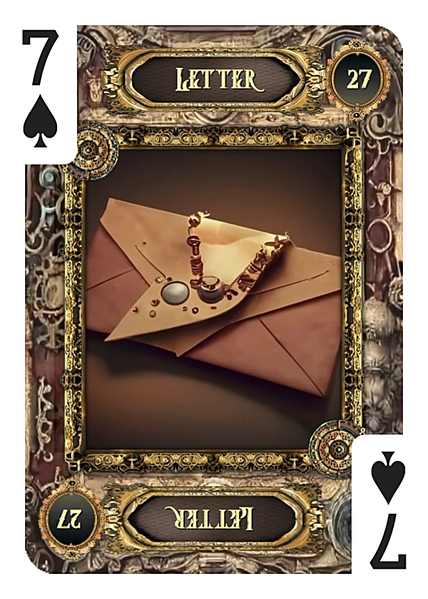
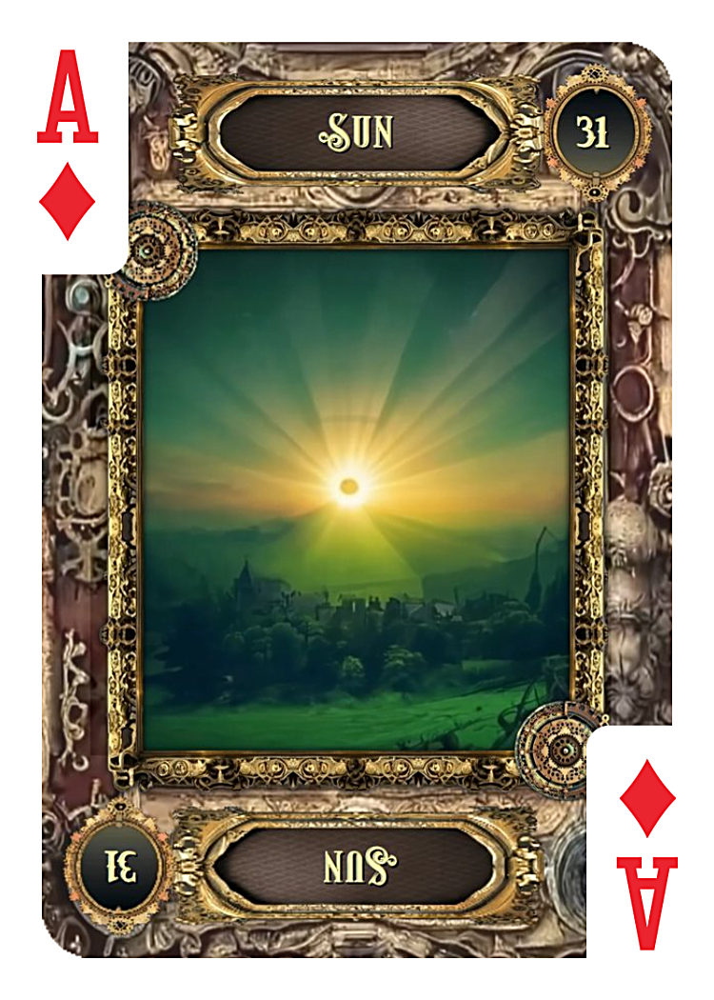

① 出たカード
- 2枚目 手紙
- ジャンピング 太陽
「連絡が来るなら手紙」と決めて占っているため、手紙のカードがどこで出るかが重要になります。
今回は、30枚以上ではなく、かなり早い段階である2枚目に手紙が出ました。これは、答えとしてかなり明確に連絡が来る可能性があると読める配置です。
さらに太陽がジャンピングで出ているため、連絡の内容や流れも悪くなさそうです。
② 手紙と太陽の組み合わせ
手紙と太陽が一緒に出ている場合は、
手紙＋太陽＝明るい連絡＝前向きな知らせ＝不安が晴れるメッセージ＝状況が少し好転する、と読むことができます。
連絡が来た場合、その内容は重く暗いものというより、あなたにとって安心できるものになりやすいでしょう。
③ それぞれのカードの意味

手紙｜2枚目
ルノルマンカードの手紙は、連絡・メッセージ・知らせ・通知・文章でのやり取りを表します。現代で読む場合は、手紙そのものだけでなく、LINE・メール・SNSのDM・ショートメッセージなども含まれます。
恋愛で手紙が出た場合は、相手からの連絡や、何かしらのメッセージが届く可能性を示します。特に今回のように最初から「連絡が来るなら手紙」と決めて占っている場合、手紙はとても分かりやすい答えになります。
2枚目という早い位置は、そこまで遠い未来ではない可能性もあります。ただし時期はカードの展開方法や設定によって変わるため、連絡の可能性は強く出ていると受け取るのが自然です。

太陽JUMPING
ジャンピングカードとして出た太陽は、とても明るいカードです。太陽は、成功・明るい展開・前向きな結果・はっきりすること・安心感を表します。
恋愛で太陽が出た場合、状況が暗いまま終わるというより、光が差すような展開を示します。曖昧だったことがはっきりしたり、不安が少し軽くなったりする可能性があります。
- 成功・明るい展開
- はっきりする・安心感
- 前向きな結果
④ 元彼から連絡は来るのか
今回の結果を見る限り、元彼から連絡が来る可能性は高めです。特に、最初にルールを決めて占った中で2枚目に手紙が出ているため、カードはかなり素直に「連絡あり」と答えているように見えます。
さらに太陽がジャンピングで出ているため、ただ連絡が来るだけでなく、その連絡によって状況が少し明るくなる可能性があります。
ただし、太陽が出たからといって、すぐに復縁が決まるという意味ではありません。最初は軽いやり取りや様子見の連絡かもしれません。それでも、今まで見えなかった彼の気持ちや状況が少し分かり、あなたの不安が和らぐ可能性はあります。
まとめ
今回のルノルマンの結果は、元彼から連絡が来る可能性をかなり強く示しています。特に2枚目に手紙という結果は、「連絡が来る」と読むにはとても分かりやすい配置です。
さらにジャンピングカードで太陽が出ているため、連絡の内容やその後の流れも暗いものではなさそうです。
元彼から連絡が来る可能性は高め。しかも、その連絡によって不安が少し晴れたり、状況が前向きに動いたりする可能性がある、と読めます。
焦ってこちらから強く動くより、まずは自然な流れを待ってみてもよさそうです。